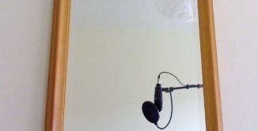

Sound

I am a hobbyist composer and producer of electronic music of various kinds. My influences include Hip Hop, Big Beat and Electronica. I also write and record my own lyrics from time to time.
In case you are interested in what equipment I use for creating my music, please have a look here.
If you are looking for the music I did together with Giacomo Novembre, please visit intermezzo.fladd.de